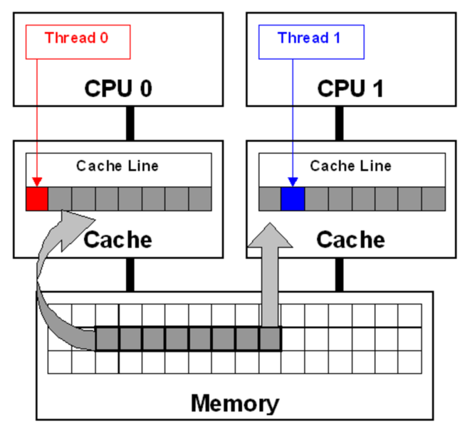
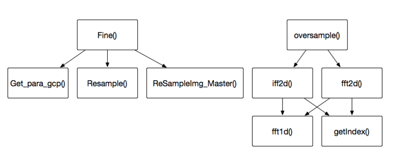
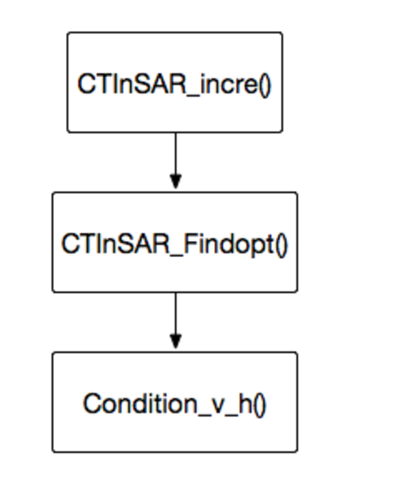

InSAR Notes(GTD)
Table of Contents
- 1. Questions
- 2. 菜单
- 3. SARStudio Structure
- 4. Compile progress
- 5. Overall schedule
- 5.1. DONE Core: decide test order
- 5.2. DONE Core: test Core
- 5.3. DONE Common: test Common
- 5.4. DONE compile files from liuhuan
- 5.5. DONE convert pfxConvertor to linux style
- 5.6. DONE convert pfxInSAR to linux style
- 5.7. DONE convert pfxCTInSAR to linux style
- 5.7.1. DONE MeanCoh 平均相干性系数图计算 (12)
- 5.7.2. DONE Musk 相干目标选取 (13)
- 5.7.3. DONE Baseline 基线、入射角和斜距计算 (14)
- 5.7.4. DONE PSC PSC结构生成 (15)
- 5.7.5. DONE Denuanay 三角网建立 (16)
- 5.7.6. DONE Integration 增量集成 (17)
- 5.7.7. DONE Residue 残余相位计算 (18)
- 5.7.8. DONE ResidueUnw 残余相位解缠 (19)
- 5.7.9. DONE Uonlinear 非线性形变和大气相位计算 (20)
- 5.8. DONE convert pfxRoiSelect to linux style
- 5.9. CANCELLED compile all files on linux (gc05)
- 5.10. DONE compile all files on linux (mnode04)
- 5.11. DONE test on mnode04 with data
- 5.11.1. DONE test Share
- 5.11.2. DONE 数据导入 Rd2Sp2Local (on windows yet)
- 5.11.3. DONE scrutinize the procedures on windows from clicking on a button to executing the corresponding functions
- 5.11.4. DONE IQ通道合成 IQCombine (on mnode04 from now on)
- 5.11.5. DONE R2数据标定 R2Calibration (on mnode04)
- 5.11.6. DONE InSAR干涉组合 InterferogramMaps
- 5.11.7. DONE 粗配准 RegistrCoarse
- 5.11.8. DONE 精配准 RegistrFine
- 5.11.9. DONE 精轨数据导入 PreOrbImport
- 5.11.10. DONE ROI处理 RoiSelcetPro
- 5.11.11. DONE 平地相位计算 FlatPhase
- 5.11.12. DONE 相干性估计 CoherenceEst
- 5.11.13. DONE 复数处理 ComplexPro
- 5.11.14. DONE 平均相干系数图 MeanCoh
- 5.11.15. DONE 相干目标选取 Musk
- 5.11.16. DONE 基线、入射角和斜距计算 Baseline
- 5.11.17. DONE PSC生成 PSC
- 5.11.18. DONE Delaunay三角网建立
- 5.11.19. DONE 增量集成 Integration
- 5.11.20. DONE 离散点残余相位 Residue
- 5.11.21. DONE 残余点相位解缠 ResidueUnw
- 5.11.22. DONE 非线性形变和大气相位计算 Uonlinear
- 5.12. DONE add CIProcessable back
- 5.13. DONE add OpenMP
- 5.14. TODO add STAR
1 Questions
- mentioned file types?
- .tif是输入的原始文件，经过数据转换后生成.rmg和.ldr
- .ldr是头文件扩展名
- .orb是精轨数据文件扩展名
- .rmg是图像文件扩展名
- SAR by liuhuan?
- SAR, SAROMP, SARSTAR, SARfinal(i named it)
- why "#pragma once# appears at the beginning of header files?
- 避免同一个file被include多次
- what is REALEPSILON? file:///Users/lightjames/Nutstore/ACG_group/yaogansuo/liutao/SARStudio-linux/Plugins/PfxCTInSAR/Delaunay.cpp
- bugs in original source codes
- wrong date copy in RMGHeader
- wrong usage of feof() in while loop deciding whether keep doing fscanf()
2 菜单
2.1 图像基本处理
2.1.2 R2数据标定
2.1.3 复数据处理
2.1.4 多视处理
2.1.5 ROI处理
2.2 InSAR
2.2.2 精轨数据导入
2.2.5 平地相位计算
2.2.6 相干性估计
3 SARStudio Structure
3.1 Package
- content: gdal lib
- removed(hard to imagrate Rd2Sp2Local from win to linux), fix it later
3.2 Plugins
3.2.1 PfxBatch
- removed
3.2.2 PfxCTInSAR
3.2.3 PfxConvertor
- Rd2sp2Local RD2转换
- comment codes related to dialog
- comment codes related to CIProcessable
- change CString to string
- CPLMalloc need GDAL support, build gdal from source(on my Mac, and mnode04)
- functions in cplconv.h:
- CPLMalloc
- CPLFree
- change Core.h and Common.h to linux style
- need class CRMGHeader, change RMGHeader.h to linux style
- need class CXmlReader, change XmlReader.h to linux style
- too hard to imagrate, rollback
- IQCombine IQ通道合成
- using Core.h, change all classes in Core.h to linux style
- R2Calibration R2数据标定
- ComplexConvertor 复数处理
- MultiLook 多视处理
3.2.4 PfxInSAR
3.2.5 pfxPolPSI
3.3 SARStudio
3.4 Share
3.4.1 Common
3.4.2 Core
- add Point, RdWrIni and Rect support from liuhuan
3.4.3 Component
- removed
3.4.4 PluginFramework
- removed
3.5 UnitTest
4 Compile progress
4.1 After converting to linux version
4.1.2 SARStudio
4.2 After adding OpenMP to linux version
4.2.2 SARStudio
5 Overall schedule
5.1 DONE Core: decide test order
- according to UML in file:///Users/lightjames/Nutstore/ACG_group/yaogansuo/InSAR_Class_Diagram.mdj, the testing order in Core:
- RMGHeader
- PreOrb
- RMGBase
- RMGImage(after Common/SpMatrix)
- Point
- Rect
- RdWrIni
5.2 DONE Core: test Core
- according to the order above
5.2.1 DONE test RMGHeader
- file:///Users/lightjames/Nutstore/ACG_group/yaogansuo/liutao/SARStudio-linux/Share/Core/RMGImage.cpp
- file:///Users/lightjames/Nutstore/ACG_group/yaogansuo/liutao/SARStudio-linux/Share/Core/RMGImage.h
command:
g++ -c RMGHeader.cpp
- problems: warning: use of enumeration in a nested name specifier is a C++11 extension [-Wc++11-extensions]
5.2.2 DONE test PreOrb
command:
g++ -c PreOrb.cpp
- problems: warning: illegal character encoding in string literal [-Winvalid-source-encoding]
5.2.3 DONE test RMGBase
command:
g++ -c RMGBase.cpp
- problems:
5.2.4 DONE test RMGImage
command:
g++ -c RMGImage.cpp
- problems:
./../Common/SpMatrix.h:283:17: warning: using the result of an assignment as a condition without parentheses [-Wparentheses]
if(t=fabs(this->Get(i,row))>amax&&t!=0)
^~~~~~~~~~~~~~~~~~~~~~~~~~~~~~~~~
./../Common/SpMatrix.h:283:17: note: place parentheses around the assignment to silence this warning
if(t=fabs(this->Get(i,row))>amax&&t!=0)
^
( )
./../Common/SpMatrix.h:283:17: note: use '==' to turn this assignment into an equality comparison
if(t=fabs(this->Get(i,row))>amax&&t!=0)
^
==
./../Common/SpMatrix.h:283:17: warning: using the result of an assignment as a condition without parentheses [-Wparentheses]
if(t=fabs(this->Get(i,row))>amax&&t!=0)
^~~~~~~~~~~~~~~~~~~~~~~~~~~~~~~~~
./../Common/SpMatrix.h:245:22: note: in instantiation of member function 'CSpMatrix<double>::Pivot' requested here
int indx=Pivot(k);
^
RMGImage.cpp:86:19: note: in instantiation of member function 'CSpMatrix<double>::Inverse' requested here
lmtmtx=lmtmtx.Inverse();
^
./../Common/SpMatrix.h:283:17: note: place parentheses around the assignment to silence this warning
if(t=fabs(this->Get(i,row))>amax&&t!=0)
^
( )
./../Common/SpMatrix.h:283:17: note: use '==' to turn this assignment into an equality comparison
if(t=fabs(this->Get(i,row))>amax&&t!=0)
5.2.5 DONE test Point
command:
g++ -c Point.cpp
- problems:
5.2.6 DONE test Rect
command:
g++ -c Rect.cpp
- problems:
5.2.7 DONE test RdWrIni
command:
g++ -c RdWrIni.cpp
- problems:
5.3 DONE Common: test Common
5.3.1 DONE test SpMatrix (fixed)
CLOSED: SCHEDULED:
command:
g++ -c SpMatrix.cpp
- problems:
./SpMatrix.h:283:17: warning: using the result of an assignment as a condition without parentheses [-Wparentheses]
if(t=fabs(this->Get(i,row))>amax&&t!=0)
^~~~~~~~~~~~~~~~~~~~~~~~~~~~~~~~~
./SpMatrix.h:283:17: note: place parentheses around the assignment to silence this warning
if(t=fabs(this->Get(i,row))>amax&&t!=0)
^
( )
./SpMatrix.h:283:17: note: use '==' to turn this assignment into an equality comparison
if(t=fabs(this->Get(i,row))>amax&&t!=0)
^
==
1 warning generated.
5.3.2 DONE test SpStatistics
5.4 DONE compile files from liuhuan
- liuhuan's files: file:///Users/lightjames/Nutstore/ACG_group/yaogansuo/liuhuan/SAR_final
- CoherenceEst.cpp
- problems:
./../../Share/Core/../Common/SpMatrix.h:283:17: warning: using the result of an assignment as a condition without parentheses [-Wparentheses]
if(t=fabs(this->Get(i,row))>amax&&t!=0)
^~~~~~~~~~~~~~~~~~~~~~~~~~~~~~~~~./../../Share/Core/../Common/SpMatrix.h:283:17: note: place parentheses around the assignment to silence this warning if(t=fabs(this->Get(i,row))>amax&&t!=0) ^ ( ) ./../../Share/Core/../Common/SpMatrix.h:283:17: note: use '==' to turn this assignment into an equality comparison if(t=fabs(this->Get(i,row))>amax&&t!=0) ^ == 1 warning generated.
- problems:
./../../Share/Core/../Common/SpMatrix.h:283:17: warning: using the result of an assignment as a condition without parentheses [-Wparentheses]
if(t=fabs(this->Get(i,row))>amax&&t!=0)
- FlatPhase.cpp
- problems: same as above
- MeanCoh.cpp
- problems: same as above. changed as different from liuhuan
- RegistrFine.cpp
- problems:
./../../Share/Common/SpMatrix.h:283:17: warning: using the result of an assignment as a condition without parentheses [-Wparentheses]
if(t=fabs(this->Get(i,row))>amax&&t!=0)
^~~~~~~~~~~~~~~~~~~~~~~~~~~~~~~~~./../../Share/Common/SpMatrix.h:283:17: note: place parentheses around the assignment to silence this warning if(t=fabs(this->Get(i,row))>amax&&t!=0) ^ ( ) ./../../Share/Common/SpMatrix.h:283:17: note: use '==' to turn this assignment into an equality comparison if(t=fabs(this->Get(i,row))>amax&&t!=0) ^ == RegistrFine.cpp:159:23: warning: invalid conversion specifier '\x0a' [-Wformat-invalid-specifier] printf("process:%1\n"); ~~^
- problems:
./../../Share/Common/SpMatrix.h:283:17: warning: using the result of an assignment as a condition without parentheses [-Wparentheses]
if(t=fabs(this->Get(i,row))>amax&&t!=0)
5.5 DONE convert pfxConvertor to linux style
- the order is decided according to file:///Users/lightjames/Nutstore/ACG_group/yaogansuo/R2用户手册V3.pdf (p31)
5.5.1 DONE IQCombine IQ通道合成 (2)
- change FILE to ifstream and ofstream
- change fopen() to open()
- change fseek() to seekg()
- change fread(), fwrite(), fclose() to read(), write(), close()
- fix MACROGENERICINVOKE problem
5.5.2 DONE R2Calibration R2数据标定 (3)
5.5.3 DONE ComplexConvertor 复数处理 (11)
5.5.4 DONE MultiLook 多视处理
5.6 DONE convert pfxInSAR to linux style
- the order is decided according to file:///Users/lightjames/Nutstore/ACG_group/yaogansuo/R2用户手册V3.pdf (p31)
5.6.1 DONE BaseLineEst 基线分析
5.6.2 DONE InterferogramMaps 干涉组合分析 (4)
5.6.3 DONE InterferDepict 干涉图生成
5.6.5 DONE RegistrFine 精配准 (6)
5.6.6 DONE PreOrbImport 精轨数据导入 (7)
5.6.7 DONE FlatPhase 平地相位计算 (9)
5.6.8 DONE CoherenceEst 相干性估计 (10)
5.7 DONE convert pfxCTInSAR to linux style
- the order is decided according to file:///Users/lightjames/Nutstore/ACG_group/yaogansuo/R2用户手册V3.pdf (p31)
5.7.1 DONE MeanCoh 平均相干性系数图计算 (12)
5.7.2 DONE Musk 相干目标选取 (13)
5.7.3 DONE Baseline 基线、入射角和斜距计算 (14)
5.7.5 DONE Denuanay 三角网建立 (16)
5.7.7 DONE Residue 残余相位计算 (18)
5.7.8 DONE ResidueUnw 残余相位解缠 (19)
5.7.9 DONE Uonlinear 非线性形变和大气相位计算 (20)
5.8 DONE convert pfxRoiSelect to linux style
- the order is decided according to file:///Users/lightjames/Nutstore/ACG_group/yaogansuo/R2用户手册V3.pdf (p31)
5.8.1 DONE RoiSelcetPro ROI处理 (8)
5.9 CANCELLED compile all files on linux (gc05)
5.10 DONE compile all files on linux (mnode04)
5.10.1 DONE set up suitesparse 4.2.1
- reason: need umfpack.h …
- local install path: /home/liutao/local/include /home/liutao/local/lib
5.10.2 DONE compile Plugins
- DONE PfxConvertor
- ComplexConvertor: passed
- ComplexPro: fixed
- need boost
- DONE install boost on mnode04
https://mozillazg.com/2016/04/linux-how-to-build-boost.python-on-centos7.md.html
- install path: /opt/boost1620
- DONE PfxCTInSAR
- command: g++ -std=c++11 -c -I/opt/boost1620 -I/home/liutao/local/include *.cpp
- DONE PfxInSAR
problems:
- SpMatrix.h: memcpy not declared
- include <cstring>
- SpMatrix.h: memcpy not declared
- DONE pfxRoiSelect
passed
5.11 DONE test on mnode04 with data
- test order:
file:///Users/lightjames/Nutstore/ACG_group/yaogansuo/R2用户手册V3.pdf
- test data location:
mnode04: home/liutao/workspace/ygsdata
5.11.1 DONE test Share
files: file://liutao@mnode04:/home/liutao/workspace/github/ygs-linux/Share/ (Makefile and test*.cpp)
- Rect: g++ -c Rect.cpp -std=c++11
- Point: g++ -c Point.cpp -std=c++11
- RdWrIni: g++ -c RdWrIni.cpp -std=c++11
- RMGHeader: g++ -c RMGHeader.cpp -std=c++11 (when g++ -o need -lboostregex)
- PreOrb: done
- RMGBase: done
- SpMatrix: done
- SpStatistics: done
- RMGImage: done
5.11.2 DONE 数据导入 Rd2Sp2Local (on windows yet)
- on windows
- HuaiNanData2012 ==> 1.rmg, 1.ldr, 2.rmg, 2.ldr, 3.rmg, 3.ldr, 4.rmg, 4.ldr
5.11.3 DONE scrutinize the procedures on windows from clicking on a button to executing the corresponding functions
- it took me so much time!
5.11.4 DONE IQ通道合成 IQCombine (on mnode04 from now on)
- input: file://liutao@mnode04:/home/liutao/workspace/ygs_data/ori (1.rmg, 2.rmg, 3.rmg, 4.rmg)
- output: file://liutao@mnode04:/home/liutao/workspace/ygs_data/SLC (1.rmg, 2.rmg, 3.rmg, 4.rmg)
- file: ygs-linux/UnitTest/TestIQCombine.cpp
- problems:
- segementation fault (core dumped): fixed
5.11.5 DONE R2数据标定 R2Calibration (on mnode04)
- input: file://liutao@mnode04:/home/liutao/workspace/ygs_data/SLC/*.rmg file://liutao@mnode04:/home/liutao/workspace/ygs_data/ori/lutSigma*.xml
- output: file://liutao@mnode04:/home/liutao/workspace/ygs_data/SLC/cal/*.rmg
- file: ygs-linux/UnitTest/TestR2Calibration.cpp
5.11.6 DONE InSAR干涉组合 InterferogramMaps
- input: file://liutao@mnode04:/home/liutao/workspace/ygs_data/SARdata.txt
- output: file://liutao@mnode04:/home/liutao/workspace/ygs_data/inSARgraphy.txt
- file: ygs-linux/UnitTest/TestInterferogramMaps.cpp
- problems:
- segementation fault (core dumped): fixed
- found bugs in RMGHeader.cpp from liuhuan, and in RMGHeader.h from yaogansuo
- RMGHeader.cpp: in Save(), missing spaces when write to lpExport file.
- RMGHeader.h: in StructStateVector, wrong timePoint assignment.
- not enough disk space
- mnode04:/home 100% used
- segementation fault (core dumped): fixed
5.11.7 DONE 粗配准 RegistrCoarse
- input: file://liutao@mnode04:/home/liutao/workspace/ygs_data/SLC/cal/ (1,2) (1,3) (1,4) rmg, ldr
- output: file://liutao@mnode04:/home/liutao/workspace/ygs_data/coaReg/ 2 3 4 rmg
- file: ygs-linux/UnitTest/TestRegistrCoarse.cpp
- problems:
5.11.8 DONE 精配准 RegistrFine
- input: file://liutao@mnode04:/home/liutao/workspace/ygs_data/SLC/cal/1.rmg file://liutao@mnode04:/home/liutao/workspace/ygs_data/coaReg/ 2 3 4 rmg
- output: file://liutao@mnode04:/home/liutao/workspace/ygs_data/fineReg/ 12 2 13 3 14 4 rmg
- file: ygs-linux/UnitTest/TestRegistrFine.cpp
- problems:
- segmentation fault (core dumped)
- in RegistrFine.cpp, in Getparagcp: the matrix for function Inverse() is zero.
- DONE found wrong data output from R2Calibration (IQCombine's output is correct)
- it turned out that it was the wrong input path that caused this problem: I mistook /SLC/cal/1.rmg for /SLC/1.rmg
- DONE fix R2Calibration
- compared with data of windows program, almost the same. (小数后六位是相同的)
- DONE check RegistrCoarse
- test RegistrFine with data /cal/1.rmg on linux and /coaReg/2.rmg on windows, passed.
- so bugs exist in RegistrCoarse!
- possible reason: fseek in linux c++ is not equalient to _fseeki64 in windows c++.
5.11.9 DONE 精轨数据导入 PreOrbImport
- input: file://liutao@mnode04:/home/liutao/workspace/ygs_data/SLC/cal/1.rmg file://liutao@mnode04:/home/liutao/workspace/ygs_data/ori/24951_def-120924.orb
- output: file://liutao@mnode04:/home/liutao/workspace/ygs_data/SLC/cal/1.orb
- file: ygs-linux/UnitTest/TestPreOrbImport.cpp
- problems:
- origin orb files of 1.rmg and 2.rmg are missed, only 3.rmg and 4.rmg tested yet.
5.11.10 DONE ROI处理 RoiSelcetPro
- input: file://liutao@mnode04:/home/liutao/workspace/ygs_data/ori/1.rmg 3401 8001 3200 1600
- output: file://liutao@mnode04:/home/liutao/workspace/ygs_data/ROI/1.rmg
- file: ysg-linux/UnitTest/TestRoiSelectPro.cpp
- problems:
5.11.11 DONE 平地相位计算 FlatPhase
- input: file://liutao@mnode04:/home/liutao/workspace/ygs_data/fineReg/ (1,2) (1,4) (2,3) (2,4) (3,4) rmg, ldr
- output: file://liutao@mnode04:/home/liutao/workspace/ygs_data/flatPha/ 1-2 1-4 2-3 2-4 3-4 rmg, ldr
- file: ygs-linux/UnitTest/TestFlatPhase.cpp
- problems:
- segmentation fault (core dumped) ./test (fixed, need *.orb files in /fineReg directory)
5.11.12 DONE 相干性估计 CoherenceEst
- input: file://liutao@mnode04:/home/liutao/workspace/ygs_data/fineReg/ (1,2) rmg file://liutao@mnode04:/home/liutao/workspace/ygs_data/flatPha/ 1-2 rmg
- output: file://liutao@mnode04:/home/liutao/workspace/ygs_data/coh/ 1-2 rmg
- file: ygs-linux/UnitTest/TestCoherenceEst.cpp
5.11.13 DONE 复数处理 ComplexPro
- input: file://liutao@mnode04:/home/liutao/workspace/ygs_data/coh/1-2.rmg
- output: file://liutao@mnode04:/home/liutao/workspace/ygs_data/coh/ amp/1-2.rmg pha/1-2.rmg
- file: ygs-linux/UnitTest/TestComplexPro.cpp
5.11.14 DONE 平均相干系数图 MeanCoh
- input: file://liutao@mnode04:/home/liutao/workspace/ygs_data/CTI/coherence.txt
- output: file://liutao@mnode04:/home/liutao/workspace/ygs_data/CTI/meanCoh.rmg meanCoh.ldr
- file: ygs-linux/UnitTest/TestMeanCoh.cpp
5.11.15 DONE 相干目标选取 Musk
- input: file://liutao@mnode04:/home/liutao/workspace/ygs_data/CTI/meanCoh.rmg
- output: file://liutao@mnode04:/home/liutao/workspace/ygs_data/CTI/CTmusk.rmg
- file: ygs-linux/UnitTest/TestMusk.cpp
5.11.16 DONE 基线、入射角和斜距计算 Baseline
- input: file://liutao@mnode04:/home/liutao/workspace/ygs_data/fineReg/ (1,2) rmg, orb
- output: file://liutao@mnode04:/home/liutao/workspace/ygs_data/CTI/BIR/ b1-2.rmg i1-2.rmg r1-2.rmg
- file: ygs-linux/UnitTest/TestBaseline.cpp
- problems:
- ../Plugins/PfxCTInSAR/Baseline.cpp:208:38: error: non-constant-expression cannot be narrowed from type 'int' to 'double' in initializer list [-Wc++11-narrowing] (fixed)
5.11.17 DONE PSC生成 PSC
- input: file://liutao@mnode04:/home/liutao/workspace/ygs_data/CTI/ CTmusk.rmg phase.txt BT.txt BIR.txt
- output: file://liutao@mnode04:/home/liutao/workspace/ygs_data/CTI/PSC.rmg
- file: ygs-linux/UnitTest/TestPSC.cpp
- problems:
- find the wrong test function: not CreatePSC(), but Process()!
5.11.18 DONE Delaunay三角网建立
- input: file://liutao@mnode04:/home/liutao/workspace/ygs_data/CTI/PSC.rmg
- output: file://liutao@mnode04:/home/liutao/workspace/ygs_data/CTI/edge.rmg
- file: ygs-linux/UnitTest/TestDeluanay.cpp
5.11.19 DONE 增量集成 Integration
- input: file://liutao@mnode04:/home/liutao/workspace/ygs_data/CTI/ edge.rmg edge.ldr PSC.rmg PSC.ldr
- output: file://liutao@mnode04:/home/liutao/workspace/ygs_data/CTI/ integratePoint.rmg integratePoint.ldr vel.txt
- file: ygs-linux/UnitTest/TestIntegration.cpp
- problems:
- need suitesparse support!
- install suitesparse on mnode04:
install blas and lapack: (libs at usr/lib64)
yum install blas blas-devel lapack lapack-devel atlas atlas-devel
- download suitsparse4.2.1 (at home/liutao/downloads/SuiteSparse)
- download metis4.0.3 and move it as /home/liutao/downloads/SuiteSparse/metis4.0
- cd /home/liutao/downloads/SuiteSparse && make
- sudo make install (libs at /usr/local/lib; headers at /usr/local/include)
- to uninstall: cd /home/liutao/downloads/SuiteSparse && sudo make uninstall
- install suitesparse on mnode04:
- need suitesparse support!
5.11.20 DONE 离散点残余相位 Residue
- input: file://liutao@mnode04:/home/liutao/workspace/ygs_data/CTI/PSC.rmg
- output: file://liutao@mnode04:/home/liutao/workspace/ygs_data/CTI/integratePoint.rmg
- file: ygs-linux/UnitTest/TestResidue.cpp
5.11.21 DONE 残余点相位解缠 ResidueUnw
- input: file://liutao@mnode04:/home/liutao/workspace/ygs_data/CTI/integratePoint.rmg
- output: file://liutao@mnode04:/home/liutao/workspace/ygs_data/CTI/unwrapPoint.rmg
- file: ygs-linux/UnitTest/TestResidueUnw.cpp
5.11.22 DONE 非线性形变和大气相位计算 Uonlinear
- input: file: file://liutao@mnode04:/home/liutao/workspace/ygs_data/CTI/ PSC.rmg integratePoint.rmg SARtime.txt unwrapPoint.rmg Group.txt
- output: file://liutao@mnode04:/home/liutao/workspace/ygs_data/CTI/ velFileOut.txt deformationOut/*
- file: ygs-linux/UnitTest/TestUonlinear.cpp
- problems:
- lack input files(SARtime.txt, Group.txt…), ask ygs for help on QQ but not replied.
- problems:
- lack input files(SARtime.txt, Group.txt…), ask ygs for help on QQ but not replied.
- gotten the input examples, i compiled the test file but failed again.
found bug: ygs-linux/Plugins/pfxCTInSAR/Uonlinear.cpp
fgets() may execute different when on Windows and on Linux. on Linux, if use the following coding style, one more line will be read.
while (!feof(fp)) { fgets(buf, LINE_MAXSIZE, fp); ... }
the right usage is:
while (fgets(buf, LINE_MAXSIZE, fp) != NULL) { ... }
5.12 DONE add CIProcessable back
- class CIProcessable is inherited by most classes in Plugins.
- add Process() and Batch() function framework for each of them.
- test: run script runlinux.sh in /UnitTest directory.
5.13 DONE add OpenMP
5.13.1 DONE clean all code
5.13.2 DONE test all
run the testing shell script:
cd /home/liutao/workspace/github/ygs-omp/UnitTest ./run_omp.sh
5.13.3 DONE deciding the schedule of adding OpenMP
- go through Share directory (adding OpenMP here very carefully!)
- add OpenMP to Plugins directory (follow the schedule as 5.11)
- update UnitTest directory (accompany with step 2)
5.13.4 DONE go through Share
- schedule (according to 5.1)
- RdWrIni
- RMGHeader
- PreOrb
- RMGBase
- SpMatrix
- RMGImage
- Point
- Rect
- SpStatistics
- RdWrIni
- hard to update
- unchanged
- DONE RMGHeader
- Save() function writes data to file, hard to update with OpenMP
- Load() function reads data from file, but it uses functions related to file operations from RdWrIni, which is hard to update
- unchanged
- DONE PreOrb
- unchanged
- DONE RMGBase
- unchanged
- DONE SpMatrix
- changed:
- SetValues()
- SetMatrix()
- operator+()
- operator=()
- operator*()
- Transpose()
- Oversample()
- Inverse()
compile (passed):
g++ -fopenmp -c SpMatrix.cpp
- changed:
- DONE RMGImage
- changed:
- OrbitCoef()
- PreorbCoef()
compile (passed):
g++ -fopenmp -c RMGImage.cpp
- changed:
- Point
- unchanged
- Rect
- unchanged
- DONE SpStatistics
- changed:
- Do()
- DoAdvanced()
- DoComplex()
compile (passed):
g++ -fopenmp -c SpStatistics.cpp
- problems:
- illegal variables in reduction clause
- changed:
- DONE test Share
run file://liutao@mnode04:/home/liutao/workspace/github/ygs-omp/UnitTest/run_omp.sh
# set num_threads=4 ./run_omp.sh 4
- very slow!
- possible reason: most OpenMP implementations use roughly a block partitioning while scheduling for loops ==> may cause frequent I/O !
- so, use better scheduling strategy ==> assigns chunks of chunksize iterations to each thread in a round-robin fashion
the schedule clause to apply:
schedule(static, 1)
- but it's still slow.
- possible reason: false sharing ==> different threads update different elements which are on the same cache line!
scrutinize the cache structure:
cache level cache size line size total lines L1 32768 64 512 L2 262144 64 4096 L3 25165824 64 393216 cache line size is 64 Bytes. so the chunksize should be:
schdule(static, 64/sizeof(element))
- and not aligned cache line also leads to false sharing.
- false sharing
- False sharing is a well-known performance issue on SMP systems, where each processor has a local cache. It occurs when threads on different processors modify variables that reside on the same cache line: 
- I can't find a good solution yet, so rolled back Share directory and go to add openmp in Plugins directory.
5.13.5 DONE go through Plugins(add openmp and test)
- test order see 5.11
- DONE update shell scripts in UnitTest directory
- runomp.sh: rum all tests
- cleandata.sh: delete some data
- test.sh: single class test
- DONE IQCombine
- in function Bands2Complex(), parallel for
- results:
- frequency I/O operations, keep it as serial code
- 4 image file, fastest finish time about 12s
- DONE R2Calibration
- clean the data directory
- make it run with 8 or 16 cores, the finish time accelerate from 62s to 20s~40s
- affected by I/O condition
- InterferogramMaps
- keep unchanged
- DONE RegistrCoarse
- also affected by I/O condition
- from 45s to 20s~30s
- DONE RegistrFine
- add openmp to these functions:
- Fine()
- Getparagcp()
- Resample()
- ReSampleImgMaster()
- from 350s to about 150s
- add openmp to these functions:
- PreOrbImport
- nearly 100% I/O operations
- keep it unchanged
- RoiSelcetPro
- nearly 100% I/O operations
- keep it unchanged
- DONE FlatPhase
- add openmp to function mFlatR2()
- put most variables inside for loop and parallelize it
- from 140s to about 14s
- DONE CoherenceEst
- add openmp to function CoherenceFun()
- from 240s to 25s
- DONE ComplexPro
- add openmp to function ComplexFun
- from 14s to 3s
- DONE MeanCoh
- add openmp to function MeanCoherence
- from 1.8s to 0.13s
- DONE Musk
- add openmp to function MuskCoherenceTarget
- from 0.39s to 0.3s (most are I/Os)
- CANCELLED BaseLine
- CANCELLED PSC
- generated file is empty!
- check previous files
- different from ygs-linux from RegistrFine
- in .ldr files, value of RegistrationType, RegistrationAziOffset may be different
- check how the header files is written
- fix while(!feof((file)), which is always wrong! see http://stackoverflow.com/questions/23185622/fscanf-reads-the-last-integer-twice .
- CANCELLED fix RegistrFine.cpp
- found that /fineReg/*.ldr consistent with ygs-linux, but different from ygs-omp, so bug may starts from RegistrFine.cpp
analyse code structure of cFloat region:
// for1: 790~927 for11: 799~912 // for2: 961~1371 for21: 962~1370 def mbox[], sbox[], bigslave[]; def temp_x, temp_y[]; if (eCFLOAT32 == mdatatype) { def master[], slave[], master_block[], slave_block[]; def tempnn[]; for1() { def z1[], z_cof[]; for11() { write master[]; write slave[]; write z_cof[]; } // for11 write temp_y[]; } // for1 def tempnn_mean, tempnn_std; def tempnn_count, tempnn_val; del slave[]; redef slave[]; for2() { for21() { write master_block[]; write slave_block[]; write master[]; write slave[]; } // for21 } // for2 del master[], slave[], master_block[], slave_block[]; } // if
- DONE using cmp to find bug position
- ygs-omp data in dev/shm/ygsdata
- ygs-linux data in dev/shm/ygslinuxdata
compare the output of each test with cmp:
cmp -s file1 file2 && echo "same" || echo "diff"
- create cmp.sh in UnitTest for convenience
- found that
- when run with 1 thread, bug starts from RegistrFine
- when run with multiple threads, from R2Calibration
- so, rollback to R2Calibration
- DONE parallelize IQCombine
- parallelized with read lock and write lock
- DONE check R2Calibration
- test:
- 1 thread: same as ygs-linux
- >1 thread: different from ygs-linux
problems:
- wrong mode of opening outfile in R2Calibration.cpp:
ofstream outFile(lpExport.c_str(), ios::out | ios::binary | ios::app);
- removing ios::app fixed it
- test:
- DONE check RegistrCoarse
- ok
- Note: only Coarse() is called, CoarseBlock() and CoarseOffset() are unused.
- DONE redo RegistrFine
- remove useless comments
- get the dependencies of functions in RegistrFine.cpp: 
- add openmp to Resample(), tests passed
- add openmp to ReSampleImgMaster(), tests passed
- find possibility of parallelism in Fine()
- change i,j,… as local variables inside for loop, tests passed
- add openmp to first big for loop in Fine(), tests passed
- add openmp to second big for loop in Fine(), tests passed
- result: from 280s to 40s
- NOTE:
- danger when mdatatype == eCINT16! this code block is changed but haven't been tested yet.
- DONE check FlatPhase
- tests passed
- DONE check CoherenceEst
- output data different from linux version
- fix:
- in CoherenceEst.h: put mdata, sdata and ftdata inside for loop, tests passed
- DONE check ComplexPro
- output data different from linux version
- fix:
- in ComplexPro.h: put data inside for loop, tests passed
- DONE check MeanCoh
- tested passed
- DONE check Musk
- tests passed
- DONE check BaseLine
- output data different from linux version
- fix:
- check domain of each variable in for loop
- note: in function Newton() x0, y0, z0 are both input and output
- need to generate x0, y0, z0 for each iteration (serial)
- hard to find bug position
- redo from linux version
- tests passed
- DONE check PSC
- PSC generated different output data each time
- parallelize loops with iterators:
- can't just use parallel for
- using openmp task
- no significant performance advantages
- keep as linux version (serial code)
- DONE Delaunay
- function dependencies: 
- store edge elements in vector, then parallelize the for loop with integer index
- DONE Integration
- keep unchanged
- its output data varies
- DONE Residue
- added openmp and tests passed, but slower than serial linux version
- DONE ResidueUnw
- almost 100% I/O operations
- keep unchanged
- DONE Uonlinear
- added openmp, tests passed